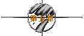
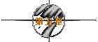

|
(原来晶晶被牛魔王抓走，治好她的伤并想利用她去找唐三藏。
牛魔王携晶晶来寻唐僧，晶晶趁牛魔王不备逃脱并找到春三
十娘，此时春三十娘已生下小孩并骗晶晶说孩子是她和至尊
宝生的，晶晶悲痛欲绝，自尽身亡。)
(这时牛魔王来抢小孩，也就是转世唐僧。春三十娘用“缩身
法”进入牛魔王体内，牛魔王也用“元神出窍”紧追不舍。
至尊宝回到盘丝洞只见晶晶的尸体，便想用月光宝盒回到过
去救晶晶。这时春三十娘与牛魔王在一动不动的牛魔王肉身
内斗法……)
二当家：喂！老婆，老婆！我老婆在里面，拜托你帮帮忙啊！
至尊宝：没有空！(跑出洞外)是不是真的能时光倒流啊？拜托啦！
(这时春三十娘从牛魔王体内飞出。)
二当家：出来啦！
春三十娘：走哇！
(春三十娘护着二当家和小孩且战且退，来到洞口。)
春三十娘：听我说，好好带大我们的孩子，走哇！(回身挡住牛魔王)
二当家：我们的孩子？？？娘子！
春三十娘：你再不走我就死给你看！
二当家：不要啊！(退出洞外)
(春三十娘开启机关，断龙石缓缓落下，自己却不能摆脱牛魔
王的纠缠。)
二当家：娘子－－！
春三十娘：相公－－！
(断龙石合拢将二人分开。)
二当家：娘子！娘子！(拼命捶打洞门。)
至尊宝：月亮快出来！好，菠若想你妈个忘光光啦！(重新查看宝盒)
是般若般罗密。般若般罗密－－！！！
(红光一闪，至尊宝突然消失。)
二当家：哇！升仙啦！
(至尊宝穿梭时空回到洞中。)
至尊宝：帅啊！真的时光倒流啦！等等等等！
(晶晶已倒地身亡。)
至尊宝：凶手跑那么快！再来！(向洞外跑去)
二当家：喂，老婆，老婆！哎，我老婆……
至尊宝：你老婆就快出来了，你急什么！
二当家：我还没说完你是怎么知道的？
(这时春三十娘从牛魔王体内飞出。)
二当家：真的出来啦！
春三十娘：走哇！
(…………)
二当家：娘子！娘子！(拼命捶打洞门。)
至尊宝：般若般罗密－－！(再次穿梭时空)
二当家：哇！又升仙啦！咦，为什么要说“又”呢？
至尊宝：(回到洞中)等等等等！(又见晶晶倒地身亡)我Kao！再来！
(向洞外跑去)
二当家：喂，老婆，老婆！哎，……
至尊宝：我警告你别烦我！
二当家：喂，为什么要我别烦你？你说呀！
至尊宝：你真是罗嗦！
二当家：是啊，我也是觉得自己很罗嗦，为什么呀？
(这时春三十娘从牛魔王体内飞出。)
二当家：出来啦！
春三十娘：走哇！
(…………)
二当家：娘子！娘子！(拼命捶打洞门。)
至尊宝：般若般罗密－－！(再次穿梭时空)
二当家：我Kao！又要升啦！
至尊宝：(回到洞中)等等等等！(又见晶晶倒地身亡)我的妈呀！累死
我了！(向洞外跑去)
二当家：喂，老婆，老婆！
(至尊宝一言不发走到二当家面前。)
至尊宝：拿来。(从二当家手中接过孩子，接着对二当家一顿暴打)拿
好！(把孩子还给二当家)我懒得跟你说！
二当家：懒得跟我说就不要说嘛，为什么要打我？
(这时春三十娘从牛魔王体内飞出。)
二当家：出来啦！
春三十娘：走哇！
(…………)
二当家：娘子！娘子！(拼命捶打洞门。)
至尊宝：般若般罗密－－！(再次穿梭时空)
二当家：娘子，跟牛魔王出来看上帝。
至尊宝：(回到洞中)刀下留人！(一脚踢出，正中还未砍中自己的白晶
晶)原来是自杀的，你为什么要自杀呢？
白晶晶：我先杀了你！
(至尊宝急忙跪倒。)
至尊宝：英雄啊！你放过我吧！
白晶晶：放过你？你给我一个不杀你的理由！
至尊宝：正在想……你给我个杀我的理由先！
白晶晶：好！你一声不响丢下我，还跟我师姐生下个儿子！
至尊宝：你完全误会了……
白晶晶：找死！(挥剑欲砍)
至尊宝：不要啊英雄！我是回去跟你师姐拿解药救你的，谁知道晚了
一步，回去已经找不到你了。
白晶晶：你骗我！
至尊宝：你不信？(掏出玉佩)Look！
(两人误会消除。这时春三十娘与牛魔王正在剧斗，白晶晶上
前夹攻，将至尊宝和二当家送出洞外，二女却被牛魔王绊住
无法脱身，断龙石缓缓落下……)
至尊宝、二当家：娘子－－！
春三十娘、白晶晶：相公－－！
(断龙石合拢将四人分开。)
至尊宝：再来！般若般罗密－－！(第五次穿梭时空)
(但是这次……)
(未完待续)
| 


 
